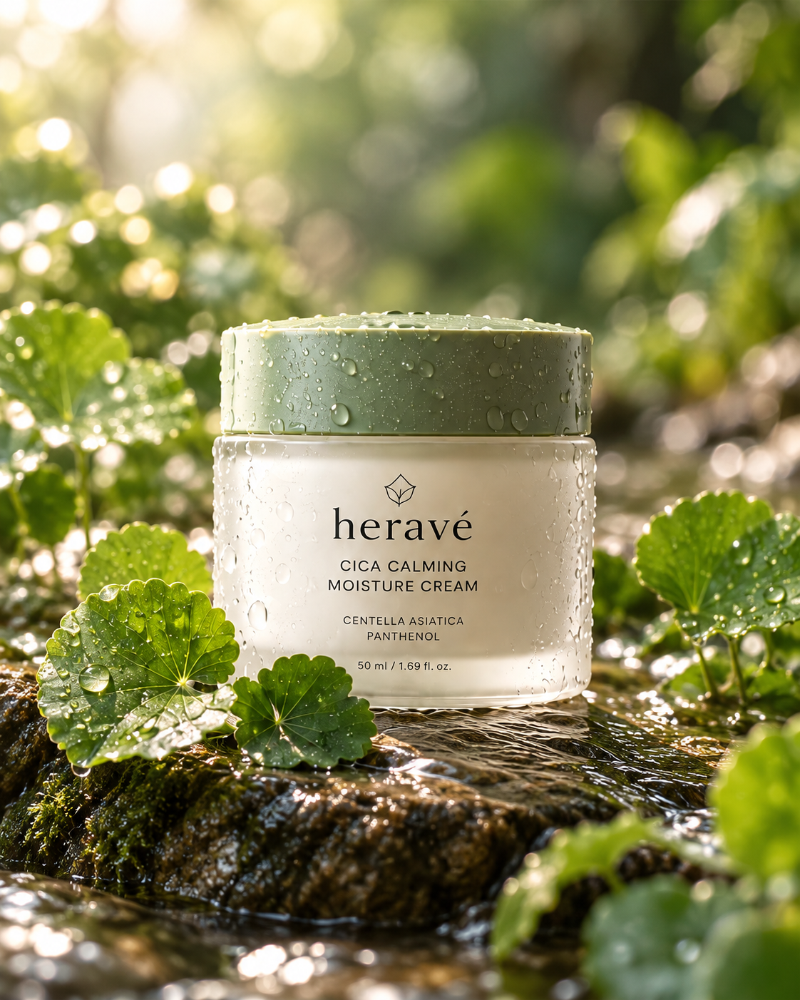
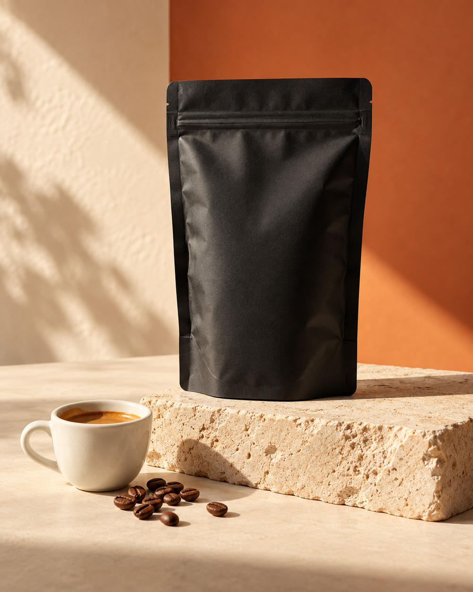
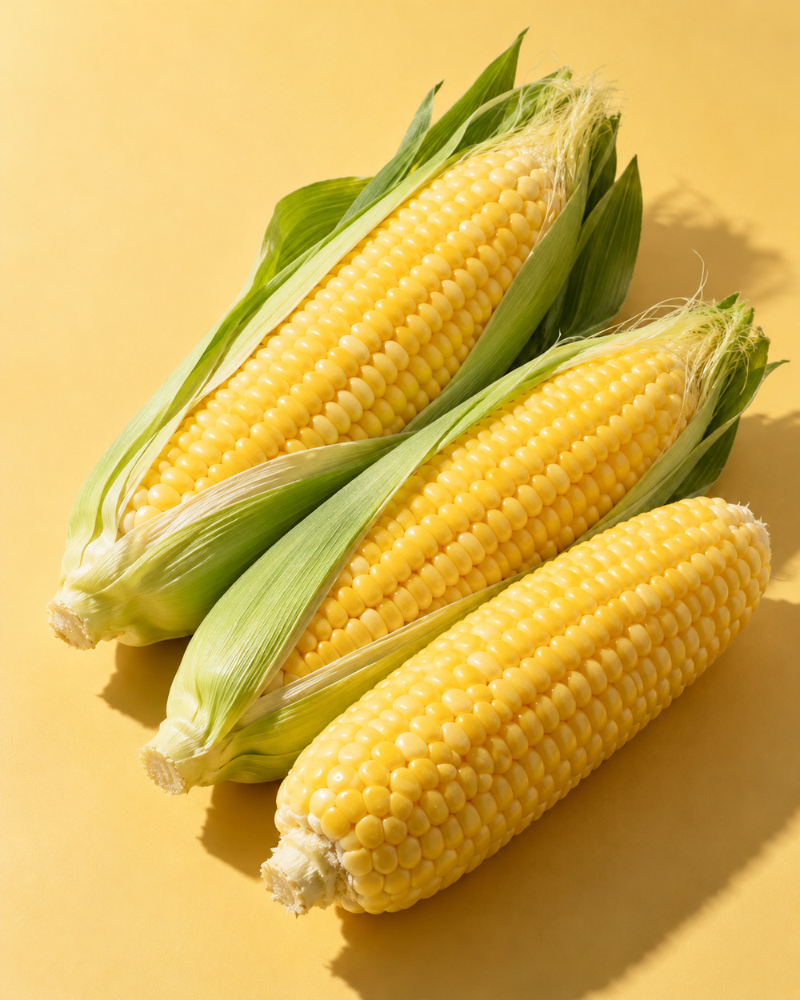
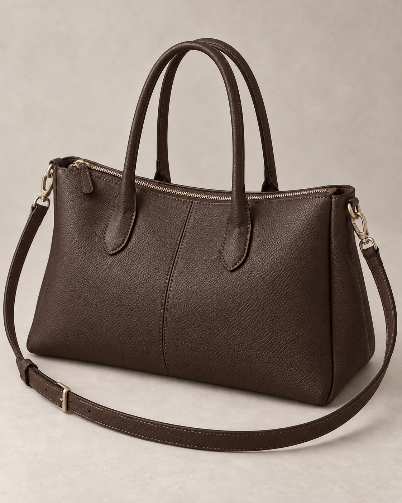

MOTIF PORTFOLIO분야에 맞는
분야에 맞는
상세페이지를 살펴보세요.
상품마다 보여줘야 할 이야기는 다릅니다. 뷰티와 식품·음료부터 생활·리빙, 패션·잡화와 디지털기기까지. 작업 샘플을 눌러 구성과 디자인을 직접 확인해 보세요.
분야별 포트폴리오07 PROJECTS

01 / 뷰티·코스메틱↗
heravé 허라베
자연의 색과 부드러운 크림의 질감을 담은 웹 상세페이지

02 / 식품·음료 · 원두↗
ROAST & RITUAL
풍미 콘셉트부터 취향 선택까지, 한 잔의 경험을 담은 원두 상세페이지

03 / 식품·음료 · 농산물↗
아침담 초당옥수수
농원 이야기부터 선별·보관 안내까지 연결한 농산물 상세페이지
04 / 건강기능식품↗
데이폼 멀티비타민
성분 구성부터 선택 가이드와 섭취 전 안내까지, 고급형 멀티비타민 상세페이지

05 / 생활·리빙↗
패브릭 우드 무드등
소재의 질감부터 낮·저녁과 공간별 연출까지, 일상에 놓이는 무드등 상세페이지

06 / 패션·잡화↗
데일리 투웨이 토트백
두 가지 색상과 착용·수납 연출부터 선택 가이드까지, 에디토리얼 토트백 상세페이지

07 / 디지털·전자기기↗
무선 오버이어 헤드폰
빛을 잡아내는 실버의 결부터 착용·일상 연출과 선택 가이드까지, 제품의 디테일을 읽는 고급형 상세페이지